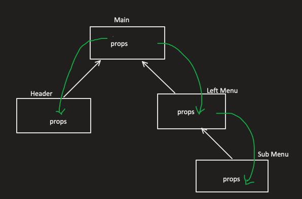
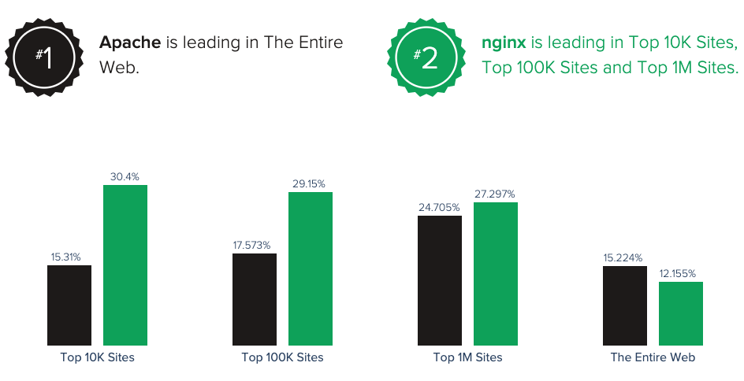

React and development environment
React, Angular, Vue are the most popular Web frameworks.
Angular and React are two clear leaders in web UI framework in terms of the market share.
Angular
- Steep learning curve
- Complete framework
- Must follow exact rules and patterns witin it.
- TypeScript
- Google
React
Concept of React
- React is Declarative
- React effectively render and update view when the data changes.
- Virtual DOM

- Components. Breaking down to any small components.
- Manage states in Each components.
- Class vs functional components.
// Functional component or called dumb component
import React from "react";
const Person = props => (
<div>
<h1>Hello, {props.name}</h1>
</div>
);
export default Person;
// Class component - maintain state
import React, { Component } from "react";
class Person extends Component {
constructor(props){
super(props);
this.state = {
myState: true;
}
}
render() {
return (
<div>
<h1>Hello Person</h1>
</div>
);
}
}
export default Person;
- JSX (JavsScript XML), HTML like syntax. Extends ECMAscript so that it coexists with JS/React code.
return (
<div><h2>{`Name|Description|PortType|Enabled|Link`}</h2>
{switches ?
<ul>
{switches.map((s,i) => <li key={i}>
{s.name}|
{s.description}|{s.portType}|
{s.enabled ? 'True' : 'False'}|
{s.link}</li>
)}
</ul> : null}
</div>
)
- ECMAScript version. ES6 is used in React. ES6 is ECMAScript 2015 or later.
React Hooks. What is and why Hooks?
- React Hooks are so welecomed by React community since its release.
- A new addition in React 16.8 (current is 16.13.x)
- Use state and other React features without writing a class
- (this means functional components for almost all UI rendering.)
- "useState" and "useEffect" are two most basic Hooks
- The following shows how "class component" is easily converted into "functional component" with React Hooks.
// Class component - maintain state
import React, { Component } from "react";
class Person extends Component {
constructor(props){
super(props);
this.state = {
myState: true;
}
}
render() {
return (
<div>
<h1>Hello Person</h1>
</div>
);
}
}
export default Person;
// Functional component with Hooks
import React, { useState } from "react";
const Person = () => {
const [mystate, setMystate] = useState(true);
return (
<div>
<h1>Hello Person</h1>
</div>
);
}
}
export default Person;

- Props are from parent node (DOM), child cannot update props. Only Parent node can update its own props.
- Imagine water flows downward. Bubbles move upward.
- (1) Child node send event to direct parent node with requesting change props.
- (2) Parent node takes event and update props.
- (3) Updated props propagates to child DOM.
- This props propagation and event handling is relatively easy for small projects, but it quicly becomes very complicated.
- We do have solutions for it.
- Redux
- Context Manager
- Reducer and Context Manager with React Hooks
If you use CRA, CRA creates standard scafolding for React project.
If you don't use CRA, folder structure is totally up to you (choose whatever you think it is the best.)
Scafolding, building, deploying
With Webpack
// src/index.js <-- main entry javascript file.
import bar from './bar';
foo();
bar();
// src/foo.js
export default function foo() {
console.log('foo');
}
// src/bar.js
export default function bar() {
console.log('bar');
}
- 'index.html' file sources 'dist/bundle.js' which has not been created. It is webpack's job to create 'dist/bundle.js' from all javascript files entering through 'index.js' in this case.
<!doctype html>
<html>
<head>
...
</head>
<body>
...
<script src="dist/bundle.js"></script>
</body>
</html>
- Webpack takes a place to build 'bundle.js' from multiple javascript files. The following is very brief 'webpack.config.js'
// webpack.config.js
const path = require('path');
module.exports = {
entry: './src/index.js',
output: {
path: path.resolve(__dirname, 'dist'),
filename: 'bundle.js'
}
};
- Webpack does similar jobs for css(or sass), image files(png, jpg) and even support middleware for testing.
With CRA (create-react-app)
- https://github.com/facebook/create-react-app
- CRA creates React boilerplate including test harness
# after install npm
$ npx create-react-app helloworld
- CRA create default webpack (but not customizable)
- We can start a new projet within minutes
- Fit for any project not requiring webpack customization
- CRA creates 'package.json'. There are basic commands to use for running development server ("start"), building production image ("build"), running Jest test ("test"), and eject CRA ("eject").
"scripts": {
"start": "react-scripts start",
"build": "react-scripts build",
"test": "react-scripts test",
"eject": "react-scripts eject"
},
Testing (including API mocker)
- React comes with Jest test lib (similar to Jasmine, Mocha)
https://jestjs.io/docs/en/tutorial-react
- API mocker libs
- UI integration testing, Cypress is modern and is relatively easy, advanced and less overhead compared to Selenium.
https://www.cypress.io/
CSS Framework
- Material UI (https://material-ui.com) <- Most active
- Bootstrap (https://react-bootstrap.github.io)
- Ant Design (https://ant.design) <-- Alibaba
- Semantic UI (https://react.semantic-ui.com)
SPA (Single Page App) vs MPA (Multi Page App)
- Multi Page App utilizes 'react-router-dom'
- SPA for a very small appliation, but most of our application should need to be MPA.
- "react router" is the most popular library for router to implement MPA.
https://reacttraining.com/react-router/web/guides/quick-start
Dockerize
- Multi-stage (mostly two stages) build is common to reduce build time.
- Create build-stage for build image
- Cache build image
- Create docker with Nginx
- Move build image to Nginx static folder
- Remove docker from build-stage
- Deploy Docker with Nginx + build image
# note that the following is not multi-stage.
# use single stage for brevity.
#
# build environment
FROM node:13.12.0-alpine as build
WORKDIR /app
ENV PATH /app/node_modules/.bin:$PATH
COPY package.json ./
COPY package-lock.json ./
RUN npm ci --silent
RUN npm install react-scripts@3.4.1 -g --silent
COPY . ./
RUN npm run build
# production environment
FROM nginx:stable-alpine
COPY --from=build /app/build /usr/share/nginx/html
# new
COPY nginx/nginx.conf /etc/nginx/conf.d/default.conf
EXPOSE 80
CMD ["nginx", "-g", "daemon off;"]
# nginx.conf
server {
listen 80;
location / {
root /usr/share/nginx/html;
index index.html index.htm;
try_files $uri $uri/ /index.html;
}
error_page 500 502 503 504 /50x.html;
location = /50x.html {
root /usr/share/nginx/html;
}
}
Webserver
- Performance with Ngnix is significantly better than Apache.
- We can see the pattern of migration from Apache to Nginx or other.


https://www.netcraft.com
- Aforementioned Nginx is de facto for building modern web application.
- Two flavors of Nginx, Nginx or NginxPlus
- Nginx is open source (free)
- NginxPlus is commercial with addition of advanced service on top of Nginx, https://www.nginx.com/products/nginx/#compare-versions

https://www.nginx.org
OAuth2/OIDC
- OIDC connection from NginxPlus ($2500/year per instance) -> not free
- OpenResty OIDC - OpenResty is a superset of Nginx, but bundled with LuaJIT scripting language.($0) -> free
- https://github.com/zmartzone/lua-resty-openidc
- https://developers.redhat.com/blog/2018/10/08/configuring-nginx-keycloak-oauth-oidc/
- For testing environment, RedHat Keycloak acts as an authorization server in OAuth-based SSO. https://www.keycloak.org/
- docker-compose file for Keycloak is in this repo.
DEMO
- JSON Sever - local API endpoint
- Using CRA to create a new application
I React Hooks
- API calls to JSON server
- DOM update
- OIDC demo with Keycloak (TBD)